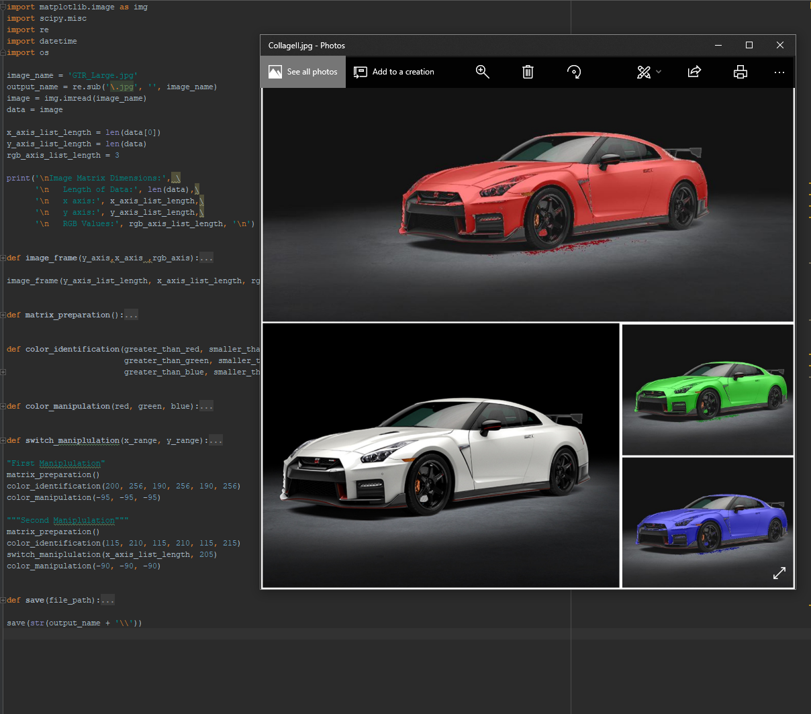

Computer Vision
Need for Speed - Segementation Mapping

Tensorflow - Pretrained Models - Automation Pipelines
Additional information and description to be added shortly.
This project is on going.
Current Outcomes.
- Loading Pretrained Tensorflow model into Tensorflow GPU
- Conducts an analysis of the display to find windowed Need for Speed
- Image use run through Tensorflow Neural Network to display image segementation
Current Situation
- Limitations = V RAM
- This project has maxed out my computational resources.
- Possibly reduce model complexity allowing more VRAM.
- Current setup results in around 3 frames processing through GPU per second. While processing the video game.
Todo
- Conduct computation graph overlaying image segementation - test.
End Goal - Car Drives itself around track.
Image Analysis and Conversion
Build out Link add description, code github, etc
Reconstruct Description and Images
Numpy
SQL_Automation_2.1 - Python
SQL_Automation_2.1 - Python from James Connolly on Vimeo .
...Add a description...
...Add a description...
...Add a description...
OCR Math Automation | 84 + 14 != 11816
OCR Math Automation from James Connolly on Vimeo .
...Add a description...
...Note Bugs exists in algorithm, need to upload content again...
...Making use of Tesseract OCR Engine...
...Add a description...
Disparity Mapping

Disparity Mapping makes use of sterostopic cameras to create a depth map.
Sterostopic Data generated in Autodesk Maya.

Add details | further descriptions.